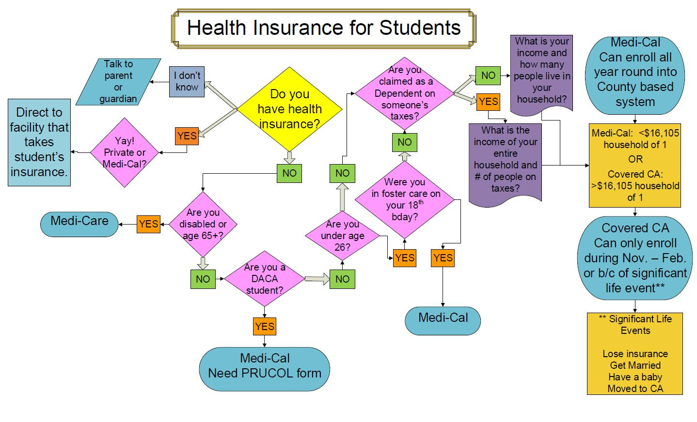

|
For life-threatening emergencies: On-campus, dial 8-2222 Off-campus, dial 911 AppointmentsTypes of Appointments: Online -- PREFERRED Phone - except after 4:45 pm In-person NOTE: The Student Health Service prioritizes students with scheduled appointments. If you choose to walk in to SHS without an appointment, we will do our best to fit you into the schedule. There may be lengthy wait times and there is no guarantee that we can see you the same day. If you have an urgent medical concern and need to be seen the same day, please come to SHS to speak with a Nurse. We encourage you to schedule your appointment online to expedite your services. Due to high patient demand and the limited availability of appointments, Student Health Services has a $20 no show fee. You must give advance notice to cancel an appointment or you will be charged the no show fee.It is preferred that you cancel appointments online at myHealth to ensure a timely cancellation and to avoid a no-show fee. No shows for appointments will result in an automatic $20.00 bill to your Bursar’s account. The charge will appear on your account the day after your missed appointment. You may pay this charge at the Bursar Cashier’s. No payments can be accepted at Student Health Services. If you have a significant reason(s) for having missed your appointment you can petition to have the no show fee waived. Click here for more information about the petition process.The following types of appointments CANNOT be booked online. Advice about colds, coughs Asthma attack Athletic Trainer appts Blood pressure checks Depo injection Dressing/Bandages changed Ear wax removal Emergency contraception Head injury Insect bites or stings IUD/Implant insertions or removals Mental health appts (such as depression, anxiety, sleep issues) Pregnancy test Recent injury Suture/Stitches/Staples removed Urinary tract infections Please call the Student Health Service at (415)338-1251
Appointment By PhoneCall(415) 338-1719 between 8:10 am - 4:45 pm, Mon, Tue, Thu and Friday. on Wed 10:00 am - 4:45 pm The busiest call times are 8:10 - 9:00 am and 12-1 pm. You may experience longer wait times on the phone during these hours. |
HoursWeekdays (except Wednesdays)8:10am – 4:45pm Extremely Urgent Services 4:45pm – 5:00pmWednesdays10:00am – 4:45pm Extremely Urgent Services 8:10am – 10:00am and 4:45pm – 5:00pm Click here to log in and schedule an appointment online from your myHealth account |
Contact & LocationPhone: (415) 338-1251 Fax: 415) 338-2278 |
Medical Care
Medical Care services includes meeting with a healthcare provider to talk about your health issues or concerns. These services are covered by the Student Health Fee ($157 per semester) and includes:
Doctor's appointments
X-Ray Services performed at Student Health Services
Laboratory work performed at Student Health Services
Appointments with the Registered Dietitian/Nutritionist
Mental Health Services including psychiatry
Counseling and Psychological Services for individual, couples, and group counseling
Health Promotion and Wellness for health education services
There is no co-payment for your appointment.
An additional fee is charged for Specialty Services, including:
Laboratory work sent to an outside laboratory for processing
Pharmacy Services
Podiatry Clinic
Rehabilitation Services
Vaccinations and Immunizations
Laboratory
All laboratory tests done at Student Health Services are provided at cost to registered students. Our laboratory can also process outside provider requests for a fee. Check with the laboratory staff for a current price list for laboratory tests. You can view your lab results by logging into myHealth.
Fall and Spring Semester Hours
| Day of the Week | Laboratory Hours | Blood Draw Hours |
|---|---|---|
| Monday and Tuesday | 8:15 am - 4:45 pm | 8:15 am - 4:00 pm |
| Wednesday | 10:00 am - 4:45 pm | 10:00 am - 4:00 pm |
| Thursday and Friday | 8:15 am - 4:45 pm | 8:15 am - 4:00 pm |
On-site Laboratory Tests
All laboratory work performed at SHS as part of basic care, such as urinalysis, urine pregnancy test (UCG), rapid strep, monospot test, and occult (stool) blood test are NO CHARGE
Off-site Laboratory Test (does not include lab processing fee)
| Lab Type | Cost |
|---|---|
| Chlamydia | $40 per test or culture |
| Comprehensive Metabolic Panel | $5 |
| Gonorrhea | $40 per test or culture |
| Hepatitis B Core Antibody only | $8 |
| Hepatitis B Surface Antibody | $5 |
| Hepatitis B Surface Antigen | $6 |
| Herpes Simplex I Blood Test | $3 |
| Herpes Simplex II Blood Test | $3 |
| Herpes Simplex Culture | $10 |
| HIV Testing Blood Test | $8 |
| Lipid Panel | $8 |
| Liver (Hepatic) Function | $4 |
| Measles Titer | $18 |
| Mumps (IgG) Titer | $9 |
| Pap Smear (SurePath) | $22 |
| Rubella Titer | $12 |
| TB Gold - Quantiferon | $50 |
| Thyroid Stimulating Hormone (TSH) | $6 |
| Chickenpox (Varicella) Titer | $4 |
Lab processing fee: $10
Laboratory Services Blood Draws - Phlebotomy (blood sent to Quest Diagnostics for testing) Urine Test - Urinalysis Urine Culture (urine sent to Quest Diagnostics for testing) Pregnancy Test - UCG Rapid Strep Monospot Test Stool Test - Occult Blood Provider performed microscopy
X Ray
X-Rays performed at Student Health Services as part of a treatment plan are provided at no charge to registered students.
Fall and Spring Semester X-Ray Hours
| Day of the Week | Time |
|---|---|
| Monday | 8:30 am - 1:30 pm |
| Tuesday | 8:30 am - 11:30 am |
| Wednesday | 10:00 am - 3:00 pm |
| Thursday | Closed |
| Friday | 8:30 am - 1:30 pm |
Summer X-Ray Hours X-Ray is closed each summer from late June to early September. Exact dates of closure will be posted in June.
X-Ray Resources Discount X-Ray Services in San Francisco for SF State students (with a prescription).
RADNET - Medical Imaging 3440 California Street San Francisco, CA 94118 Phone: (415) 922-6767 Fax: (415) 563-0468
Nutrition
Our Registered Dietitian Nutritionist, Lauren Muckley, is available for free, private appointments. Lauren practices the Intuitive Eating philosophy with patients, which focuses on consistent eating practices rather than weight. This model emphasizes: Decreasing chaotic eating and worry about food choices You as the expert of your own body and needs Tuning in to your hunger and fullness as the drive for eating Increase in variety and satisfaction with food She is available for appointments relating to: Nutrition assessment Blood pressure management Cholesterol education Diabetes Digestive disorders Disordered eating Vegetarian diet Weight management Other nutrition-related topics and goals
| Day of the Week | Time |
|---|---|
| Tuesday | 1:00pm - 4:45pm |
| Thursday | 8:20am - 12:00pm |
Appointments
Appointments are held at Student Health Services. Please arrive 15 minutes before your scheduled appointment. If you fail to keep your appointment or do not cancel it prior to your visit, you will be billed the $20 no-show fee.
Initial Appointments
These are for students who have never seen the nutritionist or have not seen the nutritionist in one year. You must fill out the online nutrition questionnaire before your appointment. You have 40 minutes to fill out the questionnaire and cannot return a second time to add more information. Initial appointments last 40 minutes. To make an appointment, login to myHealth and click on "Appointments" in the left side menu.
Follow-up Appointments
Follow-up appointments are for students who have seen the nutritionist in the last year. Follow up appointments last 20 minutes To make an appointment, login to myHealth and click on "Appointments" in the left side menu.
Vaccinations and Immunizations
Alert: Student Health now has flu vaccine. Flu shot costs $10. Schedule an immunization clinic appointment online. Or Click here for a list of nearby pharmacies where you can get a flu shot. Student Health Services gives vaccines to students and can check their immunization to certain diseases.
Students can receive vaccines and check their immunization during our Vaccination and Immunization Clinic.
| Day of the Week | Time |
|---|---|
| Tuesday | 8:30 - 11:30 am and 2:00 - 4:00 pm |
| Wednesday | 10:00 - 11:30 am |
The following vaccinations are available at cost at SHS Vaccination and Immunization Clinic:
| Vaccine Type | Cost |
|---|---|
| Hepatitis A | $61 per dose |
| Hepatitis B | $69 per dose |
| HPV - Gardasil | $248 per dose |
| Influenza (flu) - Seasonal Inactivated | $10 |
| MMR (Measles, Mumps, and Rubella) | $100 |
| Meningococcal (Meningitis) | $137-$172 |
| TB Skin Test | $30 |
| Tetanus-diphtheria | $53 |
| Tetanus-diphtheria Pertussis (Tdap) | $60 |
| Varicella (Chicken Pox) | $159 per dose |
Mental Health Services

University life can be stressful for many reasons, and it is not uncommon for students to experience emotional problems during this period of time. Many disturbances in emotional health, including depression, anxiety, self-destructive or suicidal thoughts, have a physical component. And some physical symptoms, (e.g. sleep or appetite disturbance, chest pain, stomach upset) can be caused by emotional distress. If you have any concerns related to your mental health, an evaluation by a medical professional can shed light on the cause of your symptoms and provide direction in how to treat them. At Student Health Services, we have two psychiatrists on staff to provide necessary care and medication management. For psychotherapy services offered on campus, click the link below.
Rehabilitation Services
A number of rehabilitation services are available to all students by referral from a physician. The services are designed to serve the needs of students active in recreational sports, musicians, dancers, theatre artists, and BECA majors. Any musculoskeletal condition which interferes with, or is the result of these activities warrants a referral. The Rehabilitation Clinic is available for SF State students who can benefit from exercise based therapy programs to recover from muscular-skeletal injuries. The programs are individually tailored to each student's needs. The clinic is staffed by a certified athletic trainer. There is a charge for this clinic; $10 for the 1st visit and $5 for follow-up visits.. Please be advised this is not a fitness center or personal training clinic. For questions please call Jeff McCurtain, Athletic Trainer, at (415) 338-1402.
Rehabilitation Services Staff
Athletic Trainer - Jeff McCurtain, A.T.C.
Jeff McCurtain had been an athletic trainer since 1991 and has many years of experience with SF State's performing arts majors. He also has particular expertise in designing rehabilitation programs for injured students that fit individual schedules.
Orthopedic Surgeons
On a case by case basis, orthopedic injures will be referred to local orthopedic surgeons who sub-specialize in sports injuries.
Gynecological and Reproductive Health
All registered female-bodied students may access the following gynecological and reproductive health services at SHS. These services are provided by SHS physicians (MD), nurse practitioners (NP), registered nurses (RN) and clinical or medical assistants. Birth Control Emergency Contraception (morning after pill) Gynecological medical evaluations, care and treatment Pregnancy tests and options Preventive health care Online Resources
Birth Control Refill Drop-in clinics
If you are satisfied with your current birth control method (Pill, Ring, Patch or Depo-Provera) and need a refill OR if you want to re-start a birth control method you had previously been satisfied with, then the Mini-Clinic is a good option. If you have questions or problems with your birth control method, please make a "women’s health appointment" through myHealth. FIRST check if you have any remaining refills at the Student Health Service Pharmacy. If no refills or your prescription has expired, this clinic is FOR YOU! Limited to first come, first served. Arrive early to be seen.
Mini-Clinic Hours
| Day of the Week | Time | Area |
|---|---|---|
| Wednesday | 2:10 - 3:10 PM | Clinic A |
| Thursday | 2:30 - 3:30 PM | Clinic C |
Emergency Contraception ("morning after pill")
Emergency Contraception is available at the Student Health Services Pharmacy after you see one of our providers or nurses for a prescription. Emergency contraception is also known as the ‘morning after pill," Plan B, Next Choice, or Ella. If you are enrolled in Family PACT, the cost of emergency contraception will be covered. Resources for emergency contraception when the health center is closed: You can purchase it at most pharmacies without a prescription. www.Not-2-late.com for listings of pharmacies near you SF City Clinic online prescription click on Plan B and follow instructions to send a prescription to a nearby pharmacy. You can use your FamilyPACT card to receive Plan B at no cost to you.
Gynecological medical evaluations, care, and treatment
Gynecological evaluations, exams, and treatments are available. Make a "women’s health appointment" through myHealth. Vaginal bumps, unusual discharge or other symptoms Menstrual or vaginal bleeding issues Breast issues Sexually transmitted infection (STI) or exposure –we can screen you! Menopausal symptoms Pap smears after age 21 and abnormal Pap smear follow-up (NOTE: you must call the clinic at 415-338-1251 to set up a Pap smear appointment)
Family PACT Program Overview
The Family Planning, Access, Care, Treatment (Family PACT) is a federally funded program that helps people avoid getting pregnant or causing a pregnancy when they are not ready. You must be a California resident and meet eligibility criteria. All Family PACT information is confidential and program enrollment is completely voluntary. Students are free to withdraw from the program at any time or to refuse any service. Eligible students will receive a Health Access Program (HAP) card when they enroll in the program. The card can be used at any provider that offers Family PACT in California. To sign up for Family PACT, make a medical appointment with an SHS provider for family planning services. At your appointment, your SHS provider will discuss whether enrolling in Family PACT is a good option for you. If you are eligible for Family PACT you may be able to receive free testing, diagnosis, and treatment of sexually transmitted infections (STIs) and vaginal infections as well as free birth control methods.
Extra
Extra Resource Here.
FamilyPACT
The Family Planning, Access, Care, Treatment (Family PACT) is a federally funded program that helps people avoid getting pregnant or causing a pregnancy when they are not ready. You must be a California resident and meet eligibility criteria. All Family PACT information is confidential and program enrollment is completely voluntary. Students are free to withdraw from the program at any time or to refuse any service. Eligible students will receive a Health Access Program (HAP) card when they enroll in the program. The card can be used at any provider that offers Family PACT in California. To sign up for Family PACT, make a medical appointment with an SHS provider for family planning services. At your appointment, your SHS provider will discuss whether enrolling in Family PACT is a good option for you. If you are eligible for Family PACT you may be able to receive free testing, diagnosis, and treatment of sexually transmitted infections (STIs) and vaginal infections as well as free birth control methods.
Health Insurance
All international students (F-1 and J-1 visas) and all students living in University housing are required to have health insurance. Please visit the Office of International Program for more information. If you are not an international student, you can refer to the flowchart below to see what option might be right for you. You can also refer to the Domestic Health Insurance page for further information and contact information.
